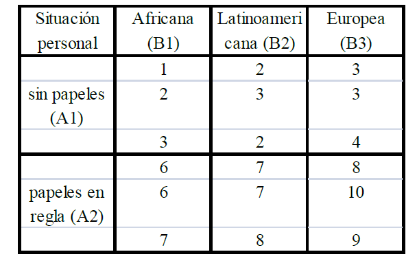

Capítulo 2 Práctica 1
2.1 CEC y Seis Signa: alternativas en R
2.2 Etapa DEFINIR: Mapas de procesos, Ishikawa, Pareto
2.2.1 Mapas de procesos
Ejemplo de la PIZZA
El gerente de un restaurante quiere estudiar el proceso de preparar y servir una pizza, por lo que se plantea hacer un mapa de procesos.
Después de recoger algunos datos de su personal, determina que las entradas son los ingredientes (ingredients), el cocinero (cook), el horno (oven), y los platos (plates); las salidas o características del proceso son la temperatura (temperature), el sabor (taste), la ternura (tenderness), el peso (weight), el radio (radius) y el tiempo total para servir la pizza (time). Estas salidas son las características principales (CTQ) de la pizza.
El proceso de hacer y servir una pizza se divide en las siguientes etapas:
- Preparar la masa.
- Añadir los ingredientes.
- Hornear la pizza.
- Entregar la pizza al cliente.
Suponemos que las “entradas de cada etapa” son las salidas del paso anterior. Las entradas para la fase primera f son las X definidas previamente (ingredientes, cocina, horno y platos). A continuación, se describen en detalle los parámetros y los resultados correspondientes a cada paso (con la clasificación de los parámetros entre paréntesis).
Primera etapa. Masa:
- Parámetros: cocinero (C), la marca de la harina (C), la proporción de agua (P).
- Salidas: masa (densidad, dureza y grosor).
Segunda etapa. Adición de ingredientes:
- Parámetros: cocinero (C), la marca de los ingredientes (Cr), la cantidad de ingredientes (P), tiempo de preparación (Cr).
- Salidas: pizza cruda (diámetro, peso, espesor).
Tercer paso. Cocción u horneado:
- Parámetros: cocinero (C), colas (N), el tiempo de cocción (Cr).
- Salidas: pizza al horno (temperatura, ternura, sabor).
Cuarto paso. Entrega:
- Parámetros: camarero (C), colas (N).
- Salidas: pizza en la mesa (temperatura, sabor, ternura, peso, radio, tiempo).
Una vez definidas las etapas con sus x e y, creamos los siguientes objetos en R para guardar, respectivamente, las entradas, salidas y etapas del proceso:
inputs <-c ("Ingredients", "Cook", "Oven", "Plates")
outputs <- c("temperature", "taste", "tenderness",
"weight", "radius", "time")
steps <- c("DOUGH", "TOPPINGS", "BAKE", "DELIVER")Seguidamente se salvan las salidas de cada etapa en el formato de listas. Las salidas de una etapa se convierten en las entradas de la siguiente:
Definimos cuatro elementos de la lista donde se meten los elementos de entrada/salida (aquí no son las características, indican el proceso de la pizza):
io[[1]] <- list("X's")
io[[2]] <- list("dough", "ingredients", "cook")
io[[3]] <- list("raw pizza", "cook", "oven plate")
io[[4]] <- list("baked pizza", "plate")Finally, we save the names, parameter types, and features:
param <- list()
param[[1]] <- list(c("cook", "C"),
c("flour brand", "C"),
c("prop Water", "P"))
param[[2]] <- list(c("cook", "C"),
c("Ing.Brand", "Cr"),
c("amount", "P"),
c("prep.Time", "Cr"))
param[[3]] <- list(c("cook","C"),
c("queue", "N"),
c("BakeTime", "Cr"))
param[[4]] <- list(c("waiter","C"),
c("queue", "N"))
feat <- list()
feat[[1]] <- list("density", "toughness", "thickness")
feat[[2]] <- list("diameter", "Weight", "thickness")
feat[[3]] <- list("temperature", "tenderness", "taste")
feat[[4]] <- list("temperature", "taste", "tenderness",
"weight", "radius", "time")
#ss.pMap- steps: A vector of characters with the name of the ‘n’ steps*
- inputs.overall: vector of characters with the name of the overall inputs
- outputs.overall: A vector of characters with the name of the overall outputs
- input.output: A vector of lists with the names of the inputs of the \(i-ésimo\) step, that will be the outputs of the \((i-1)-ésimo\) step
- x.parameters: A vector of lists with a list of the x parameters of the process. The parameter is a vector with two values: the name and the type (view details)
- y.features: A vector of lists with a list of the y features of the step. The feature is a vector with two values: the name and the type (view details)
- main: The main title for the Process Map
- sub: Subtitle for the diagram (recommended the Six Sigma project name)
- ss.col: A vector of colours for a custom drawing. At least five colours, sorted by descendant intensity (see details)
setEPS(10)
windows(12,8)
ss.pMap(steps, inputs, outputs,
io, param, feat,
sub = "Pizza Process Project")
2.2.2 DIAGRAMA DE ISHIKAWA
En la construcción de un edificio, una característica CTQ podría ser el cumplimiento de un plazo, de hecho el incumplimiento del mismo puede llevar al fracaso. Utilizando las técnicas como las descritas anteriormente, un equipo de Six Sigma identifica los siguientes eventos que pueden causar un retraso en el calendario: el tiempo, los errores en la planificación, la demora de los proveedores, operadores inadecuados, las especificaciones del cliente/retrasos, defectos en los materiales y permisos.
Un diagrama de causa y efecto nos permitirá organizar la información de tal manera como que la información obtenida sea más fácil de interpretar.
Con SixSigma
windows()
b.effect <- "Retraso"
b.groups <- c("Trabajadores", "Instrumental",
"Suministradores", "Planificación y Metodología")
b.causes <- vector(mode = "list",
length = length(b.groups))
b.causes[1] <- list(c("Entrenamiento", "Inadecuados"))
b.causes[2] <- list(c("Tipo de instrumentos", "Mantenimiento", "Calibración","Fallos en la instalación"))
b.causes[3] <- list(c("Materiales", "Retrasos entrega"))
b.causes[4] <- list(c("Requerimientos clientes", "Tipo de ensayos", "No dispon. instrument.",
"Errores de procedim.","Replanificación"))
ss.ceDiag(b.effect, b.groups, b.causes, sub = "Ejemplo Laboratorio",main="Diagrama de ISHIKAWA")
Con qcc
windows()
cause.and.effect(
cause=list(Trabajadores=c("Entrenamiento", "Inadecuados"),
Instrumental=c("Tipo de instrumentos", "Mantenimiento", "Calibración","fallos en la instalación"),
Suministradores=c("Materiales", "Retrasos entrega"),
Planificacion=c("Requerimientos clientes", "Tipo de ensayos", "No disponibilidad de instrumentos",
"Errores de procedimiento","Replanificación")),
effect=c("Retrasos"),
title = "Diagrama Causa-Efecto",
cex = c(1.5, 1.2, 1), font = c(1, 3, 2)) # Se puede modificar el tamaño y la fuente
2.2.3 DIAGRAMA DE PARETO
Datos
b.data <- data.frame(cause=factor(unlist(b.causes)),
count = c(2,1,8,1,2,2,2,3,15,12,18,1,2) ,
cost = c(50,150,50,50,20,300,50,10,5,10,50,50,150))Sin emplear ninguna función específica
windows(12,8)
pChart <- barplot(rev(sort(b.data$count)),
names.arg = b.data$cause[order(b.data$count,
decreasing = TRUE)])
text(pChart,rep(0.5,13),
sort(round(cumsum(100 * (b.data$count/sum(b.data$count))[
order(b.data$count, decreasing = TRUE)]), 1)))
Con el paquete qcc
windows(12,8)
library(qcc)
b.vector <- b.data$count
names(b.vector) <- b.data$cause
pareto.chart(b.vector, cumperc = c(80),ylab="Nº de retrasos")
##
## Pareto chart analysis for b.vector
## Frequency Cum.Freq. Percentage Cum.Percent.
## No dispon. instrument. 18.000000 18.000000 26.086957 26.086957
## Requerimientos clientes 15.000000 33.000000 21.739130 47.826087
## Tipo de ensayos 12.000000 45.000000 17.391304 65.217391
## Tipo de instrumentos 8.000000 53.000000 11.594203 76.811594
## Retrasos entrega 3.000000 56.000000 4.347826 81.159420
## Entrenamiento 2.000000 58.000000 2.898551 84.057971
## Calibración 2.000000 60.000000 2.898551 86.956522
## Fallos en la instalación 2.000000 62.000000 2.898551 89.855072
## Materiales 2.000000 64.000000 2.898551 92.753623
## Replanificación 2.000000 66.000000 2.898551 95.652174
## Inadecuados 1.000000 67.000000 1.449275 97.101449
## Mantenimiento 1.000000 68.000000 1.449275 98.550725
## Errores de procedim. 1.000000 69.000000 1.449275 100.000000Teniendo en cuenta el coste:
windows(12,8)
library(qcc)
b.vector <- b.data$cost*b.data$count
names(b.vector) <- b.data$cause
pareto.chart(b.vector, cumperc = c(80),ylab="Coste")
##
## Pareto chart analysis for b.vector
## Frequency Cum.Freq. Percentage
## No dispon. instrument. 900.000000 900.000000 30.874786
## Fallos en la instalación 600.000000 1500.000000 20.583190
## Tipo de instrumentos 400.000000 1900.000000 13.722127
## Replanificación 300.000000 2200.000000 10.291595
## Inadecuados 150.000000 2350.000000 5.145798
## Tipo de ensayos 120.000000 2470.000000 4.116638
## Entrenamiento 100.000000 2570.000000 3.430532
## Materiales 100.000000 2670.000000 3.430532
## Requerimientos clientes 75.000000 2745.000000 2.572899
## Mantenimiento 50.000000 2795.000000 1.715266
## Errores de procedim. 50.000000 2845.000000 1.715266
## Calibración 40.000000 2885.000000 1.372213
## Retrasos entrega 30.000000 2915.000000 1.029160
##
## Pareto chart analysis for b.vector
## Cum.Percent.
## No dispon. instrument. 30.874786
## Fallos en la instalación 51.457976
## Tipo de instrumentos 65.180103
## Replanificación 75.471698
## Inadecuados 80.617496
## Tipo de ensayos 84.734134
## Entrenamiento 88.164666
## Materiales 91.595197
## Requerimientos clientes 94.168096
## Mantenimiento 95.883362
## Errores de procedim. 97.598628
## Calibración 98.970840
## Retrasos entrega 100.000000El paquete qualityTools incluye la funcion paretoChart
windows()
paretoChart(b.vector,
las = 2,
percentVec = c(0, 0.5, 0.80, 1)# se sitúan las marcas ene el eje x
)
##
## Frequency 900 600 400 300 150 120 100 100 75
## Cum. Frequency 900 1500 1900 2200 2350 2470 2570 2670 2745
## Percentage 30.9% 20.6% 13.7% 10.3% 5.1% 4.1% 3.4% 3.4% 2.6%
## Cum. Percentage 30.9% 51.5% 65.2% 75.5% 80.6% 84.7% 88.2% 91.6% 94.2%
##
## Frequency 50 50 40 30
## Cum. Frequency 2795 2845 2885 2915
## Percentage 1.7% 1.7% 1.4% 1.0%
## Cum. Percentage 95.9% 97.6% 99.0% 100.0%##
## Frequency 900.00000 600.00000 400.00000 300.0000 150.000000
## Cum. Frequency 900.00000 1500.00000 1900.00000 2200.0000 2350.000000
## Percentage 30.87479 20.58319 13.72213 10.2916 5.145798
## Cum. Percentage 30.87479 51.45798 65.18010 75.4717 80.617496
##
## Frequency 120.000000 100.000000 100.000000 75.000000
## Cum. Frequency 2470.000000 2570.000000 2670.000000 2745.000000
## Percentage 4.116638 3.430532 3.430532 2.572899
## Cum. Percentage 84.734134 88.164666 91.595197 94.168096
##
## Frequency 50.000000 50.000000 40.000000 30.00000
## Cum. Frequency 2795.000000 2845.000000 2885.000000 2915.00000
## Percentage 1.715266 1.715266 1.372213 1.02916
## Cum. Percentage 95.883362 97.598628 98.970840 100.000002.3 Etapa ANALIZAR: ANOVA
- La directora gerente de una empresa industrial quiere determinar si tres programas de formación ejercen efectos distintos en la productividad de los empleados de dicha empresa. Para ello selecciona aleatoriamente muestras de empleados que han seguido cada uno de los tres programas y los somete a un examen para evaluar su competencia, anotando las puntuaciones (de 0 – 100) obtenidas por cada uno de ellos en la tabla siguiente:
| Programa 1 | 85 72 83 80 76 78 |
|---|---|
| Programa 2 | 80 84 81 78 82 86 90 88 85 |
| Programa 3 | 82 80 85 90 88 94 92 89 87 91 |
Contrastar La hipótesis de que el tipo de progarma de formación no tiene infuencia en la puntuación que sacan los trabajadores en el examen de competencia (a un nivel de significación de \(\alpha = 5\%\) )
Y: puntuación que sacan los trabajadores
X: factor “programa de formación” a tres niveles (programa 1, 2 y 3)
\(H_0\): \(\mu_1=\mu_2=\mu_3=\mu\)
Si se cumple \(H_0\), \(F= \frac{sc_{entre}/(k-1)}{sc_{dentro}/(n-k)}~ F_{k-1,n-k}\)
Contruir la base de Datos
library("RcmdrMisc")
library("multcomp")
library("SixSigma")
library("qcc")
library("qualityTools")
library("Rsolnp")
Puntuacion<-c(85,72,83,80,76,78,80,84,81,78,82,86,90,88,85,82,80,85,
90,88,94,92,89,87,91)
Programas<-c(rep("PROGRAMA1",6),rep("PROGRAMA2",9), rep("PROGRAMA3",10))
Programa <- data.frame(Puntuacion = Puntuacion, Programas = Programas)Anova
Variable Explicada (Puntuación) con (Programas)
## Df Sum Sq Mean Sq F value Pr(>F)
## Programas 2 293.4 146.7 7.888 0.00261 **
## Residuals 22 409.2 18.6
## ---
## Signif. codes: 0 '***' 0.001 '**' 0.01 '*' 0.05 '.' 0.1 ' ' 1Como el \(p-valor< \alpha\), es decir, \(0.0026<0.05\), Rechazo \(H_0\), la puntuación depende del tipo de programa de formación
¿Cuáles son los programa que realmente generan esas diferencias? Hay que aplicar un contraste de hipótesis para comparaciones dos a dos: (Contraste de Tukey)
## mean sd data:n
## PROGRAMA1 79.00000 4.732864 6
## PROGRAMA2 83.77778 3.898005 9
## PROGRAMA3 87.80000 4.417138 10##
## Simultaneous Tests for General Linear Hypotheses
##
## Multiple Comparisons of Means: Tukey Contrasts
##
##
## Fit: aov(formula = Puntuacion ~ Programas, data = Programa)
##
## Linear Hypotheses:
## Estimate Std. Error t value Pr(>|t|)
## PROGRAMA2 - PROGRAMA1 == 0 4.778 2.273 2.102 0.11204
## PROGRAMA3 - PROGRAMA1 == 0 8.800 2.227 3.952 0.00188 **
## PROGRAMA3 - PROGRAMA2 == 0 4.022 1.981 2.030 0.12797
## ---
## Signif. codes: 0 '***' 0.001 '**' 0.01 '*' 0.05 '.' 0.1 ' ' 1
## (Adjusted p values reported -- single-step method)Programa3-Programa1 es significativamente distinto de cero \(p-valor=0.00193<0.05\)
- Se ha extraído una muestra aleatoria de los salarios por hora (en euros) de los trabajadores del sector de hostelería de una CCAA española. Se cree que dos factores pueden tener influencia en la heterogeneidad de dichos salarios: A, situación y B, procedencia:

Se pide, a un \(\alpha = 0.05\): a) Comprobar si el salario es el mismo para los diferentes niveles de situación personal. b) Comprobar si el salario es el mismo para los diferentes lugares de procedencia. c) Comprobar si existe interacción.
Se crea el data-frame
library("RcmdrMisc")
library("multcomp")
library("Rsolnp")
Salario<-c(1,2,3,2,3,2,3,3,4,6,6,7,7,7,8,8,10,9)
Procedencia<-c(rep("B1",3),rep("B2",3),rep("B3",3),
rep("B1",3),rep("B2",3),rep("B3",3))
SituacionLabor<-c(rep("A1",9),rep("A2",9))
Hosteleria <- data.frame(Salario = Salario, Procedencia = Procedencia, SituacionLabor=SituacionLabor) Para realizar el Análisis de la Varianza con dos factores y su interacción:
## Anova Table (Type II tests)
##
## Response: Salario
## Sum Sq Df F value Pr(>F)
## Procedencia 12.444 2 11.2 0.001802 **
## SituacionLabor 112.500 1 202.5 7.088e-09 ***
## Procedencia:SituacionLabor 1.333 2 1.2 0.334898
## Residuals 6.667 12
## ---
## Signif. codes: 0 '***' 0.001 '**' 0.01 '*' 0.05 '.' 0.1 ' ' 1tapply(Hosteleria$Salario,
list(Procedencia=Hosteleria$Procedencia,SituacionLabor=Hosteleria$SituacionLabor),
mean, na.rm=TRUE)## SituacionLabor
## Procedencia A1 A2
## B1 2.000000 6.333333
## B2 2.333333 7.333333
## B3 3.333333 9.000000Las desviaciones típicas del salario dentro de cada combinación de niveles:
tapply(Hosteleria$Salario,
list(Procedencia=Hosteleria$Procedencia,SituacionLabor=Hosteleria$SituacionLabor),
sd, na.rm=TRUE)## SituacionLabor
## Procedencia A1 A2
## B1 1.0000000 0.5773503
## B2 0.5773503 0.5773503
## B3 0.5773503 1.0000000El número de observaciones en cada celda:
## SituacionLabor
## Procedencia A1 A2
## B1 3 3
## B2 3 3
## B3 3 32.4 Etapa MEDIR: Estudios R&R
Un fabricante de juntas tóricas para piezas metálicas instala un nuevo sistema de medición digital. El cinturón negro encargado de la mejora de un proyecto de aumento de beneficios quiere determinar con cuánta efectividad se ha aplicado el sistema de medida y si los operarios se han adaptado a él. Para ello se lleva a cabo un estudio R & R donde 3 operarios diferentes miden 10 piezas distintas 2 veces cada una.
Operario <- factor(rep(1:3, each = 20))
Pieza <- factor(rep(rep(1:10, each = 2), 3))
run <- factor(rep(1:2, 30))
Diametro <- c(0.65, 0.6, 1,1, 0.85, 0.8, 0.85, 0.95, 0.55, 0.45, 1,
1, 0.95,0.95, 0.8, 0.85, 1, 1, 0.6,0.7,
0.55, 0.55,1.05,0.95, 0.8,0.75, 0.8,0.75, 0.4,0.4,
1,1.05, 0.95,0.9, 0.75,0.7, 1,0.95, 0.55,0.5,
0.5,0.5, 1.05,1, 0.8,0.8, 0.8, 0.8, 0.45,0.5, 1,1.05, 0.95,0.95,
0.8,0.8, 1.05,1.05,0.8, 0.85)
Tubos <- data.frame(Operario, Pieza,
run, Diametro)Paquete qualityTols create a gage RnR design
set the response
response(design) = c(0.65, 0.6, 1,1, 0.85, 0.8, 0.85, 0.95, 0.55, 0.45, 1, 1, 0.95,0.95, 0.8, 0.85, 1, 1, 0.6,0.7,
0.55, 0.55,1.05,0.95, 0.8,0.75, 0.8,0.75, 0.4,0.4, 1,1.05, 0.95,0.9, 0.75,0.7, 1,0.95, 0.55,0.5,
0.5,0.5, 1.05,1, 0.8,0.8, 0.8, 0.8, 0.45,0.5, 1,1.05, 0.95,0.95, 0.8,0.8, 1.05,1.05,0.8, 0.85 ) perform Gage RnR
##
## AnOVa Table - crossed Design
## Df Sum Sq Mean Sq F value Pr(>F)
## Operator 2 0.0461 0.02304 18.433 6.01e-06 ***
## Part 9 2.0832 0.23146 185.170 < 2e-16 ***
## Operator:Part 18 0.1106 0.00614 4.915 6.41e-05 ***
## Residuals 30 0.0375 0.00125
## ---
## Signif. codes: 0 '***' 0.001 '**' 0.01 '*' 0.05 '.' 0.1 ' ' 1
##
## ----------
##
## Gage R&R
## VarComp VarCompContrib Stdev StudyVar StudyVarContrib
## totalRR 0.004542 0.1079 0.0674 0.404 0.328
## repeatability 0.001250 0.0297 0.0354 0.212 0.172
## reproducibility 0.003292 0.0782 0.0574 0.344 0.280
## Operator 0.000845 0.0201 0.0291 0.174 0.142
## Operator:Part 0.002447 0.0581 0.0495 0.297 0.241
## Part to Part 0.037553 0.8921 0.1938 1.163 0.945
## totalVar 0.042095 1.0000 0.2052 1.231 1.000
##
## ---
## * Contrib equals Contribution in %
## **Number of Distinct Categories (truncated signal-to-noise-ratio) = 4La tabla R&R consta de las siguientes columnas: VarComp (varianza), * VarCompContrib (tanto por uno con respecto a la varianza total de las medidas), * Stdev (desviación estándar), StudyVar (6·Stdev), * StudyVarContrib (6·Stdev/Stdev total ·100).
Como la contribución de la sigma a la varianza total es StudyVarContrib(totalRR) = 0.328 > 0.3, el método de medida no es adecuado, debería buscarse cómo mejorar el proceso de medida.
El número de categorías distintas debe ser mayor que o igual a cuatro. Este valor mide la relación entre la variabilidad debida al sistema de medición y la variabilidad inherente. En el caso presente es igual a 4, en el límite de la idoneidad del sistema.
visualization of Gage RnR

Y con el Paquete SixSigma (sigma=6 por defecto):
windows(15,10)
my.rr <- ss.rr(var = Diametro, part = Pieza,
appr = Operario,
data = Tubos,
main = "Six Sigma Gage R&R Measure",
sub = "Estudio R & R para Juntas Tóricas")## Complete model (with interaction):
##
## Df Sum Sq Mean Sq F value Pr(>F)
## Pieza 9 2.0832 0.23146 37.676 7.24e-10
## Operario 2 0.0461 0.02304 3.751 0.0435
## Pieza:Operario 18 0.1106 0.00614 4.915 6.41e-05
## Repeatability 30 0.0375 0.00125
## Total 59 2.2773
##
## alpha for removing interaction: 0.05
##
## Gage R&R
##
## VarComp %Contrib
## Total Gage R&R 0.0045416667 10.79
## Repeatability 0.0012500000 2.97
## Reproducibility 0.0032916667 7.82
## Operario 0.0008449074 2.01
## Pieza:Operario 0.0024467593 5.81
## Part-To-Part 0.0375532407 89.21
## Total Variation 0.0420949074 100.00
##
## StdDev StudyVar %StudyVar
## Total Gage R&R 0.06739189 0.4043513 32.85
## Repeatability 0.03535534 0.2121320 17.23
## Reproducibility 0.05737305 0.3442383 27.96
## Operario 0.02906729 0.1744037 14.17
## Pieza:Operario 0.04946473 0.2967884 24.11
## Part-To-Part 0.19378659 1.1627195 94.45
## Total Variation 0.20517044 1.2310226 100.00
##
## Number of Distinct Categories = 4